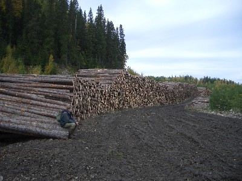
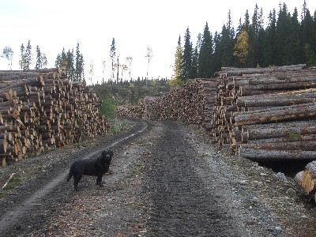
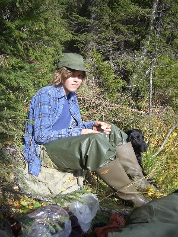

På älgjakten
(On the Moose hunt)
Might only be two pictures here, but that is alright. I have only been twice. Well, maybe
no pictures. And I am done for today, so no pictures for now...
The dog in the
picture is,I forget its name. But it is either Pia's parent's dog, actually I'm
fairly sure it is Sven-Martin's parent's dog.
  
Sustainable logging. Wow. I have never seen it before. They actually let the trees grow
back!